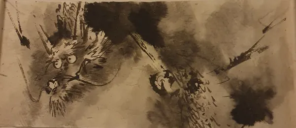
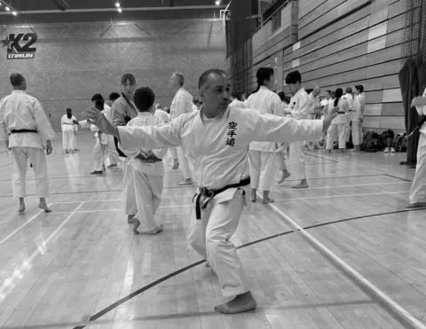

A personal reflection written by a senior EmptyHands student during the first Coronavirus lockdown in 2020.
Life under lockdown
The pandemic changed our lives in countless ways. Adjusting to lockdown took a real toll on mental health. News updates reported the latest figures every day, and it was easy to feel lost. People were cut off from friends and family, stockpiling toilet paper (yes, we know you’re out there) and facing the uncertainty of not knowing when it would end.
I struggled too, with the effect on my studies, my Karate and my work. Here are some reflections drawn from what I know about mental health, my Karate journey and my own experience. I hope you take away one idea and try it. If not, I hope you at least enjoy the read.
The dragon on the ceiling

I love to travel, and I have a tradition of bringing home a piece of art from every new city. It must have a unique story or capture an interesting moment. When I went to Japan the year before lockdown, my expectations were high.
One morning I visited a temple to practise Zen meditation with the monks. The head abbot led me into the meditation hall, and the first thing I saw was a huge dragon painted across the whole ceiling. Its eyes seemed to follow me everywhere, not in a creepy way, but like a judgemental parent. When I asked what it meant, the abbot said: “The dragon represents the true nature of Zen. It asks you who your true self is when you strip back all the layers.” I knew I had to find that dragon and bring it home.
Who is your true self?
Look at the dragon. Look at its eyes, and ask yourself who your true self is. It is a question I pondered all through lockdown, when there wasn’t much else to do. We lost the freedom to travel, and life went on without restaurants, workplaces or dojos.
So ask yourself honestly: how have you coped? Have you been productive, or is there an imprint in the sofa from days of Netflix and junk food? The dragon is watching, so be truthful.
In April my Sensei told me: “Think of a martial arts project you would love to pursue but never had time for. Now is your chance!” I promised to write loads of articles. Two months later, this is my first. I tell you this because facing our own truths matters, even when they make us look less than perfect.
Honest with ourselves
Martial artists are used to looking at their weaknesses. Kata can always improve, stances can always be stronger and kicks can always be higher. So when I reflect on my lack of productivity in lockdown, I can say it plainly: I can do better. I feel the dragon judging me.
The comfort of routine
Having something stable in your life is a wonderful thing. I have trained in Karate for over 13 years, and one constant through the pandemic was my Karate lessons. Every Thursday evening, whatever else happened, we logged in to the online dojo and trained together. It connected us and grounded us.
In Japan I also visited a Budo centre to try Kendo. The dojo was beautiful, with sliding doors on all four sides opening onto a courtyard. Unsure of the etiquette, I lingered at the entrance while a class finished. After training at the JKA headquarters, where strict etiquette is always expected, I didn’t want to get it wrong.
When the class ended, the woman the instructor had been demonstrating on took off her men, the Kendo helmet, smiled and welcomed me in. She was the instructor’s wife, and she handled the dojo’s administration as well as teaching alongside him. I felt instantly at ease, and only later understood why: my own dojo is run the same way, by Sensei and his wife. That sense of familiarity is precious, and in lockdown we all had to find it somewhere, whether in online training or video calls with friends.
It’s okay not to be okay
One lesson stood out: it is okay not to be okay. It is fine to have days when you just want to sit and do nothing. I was raised to believe that a day doing nothing is a day wasted. But finishing a six-pack of doughnuts in front of the TV from morning till night is definitely not nothing, thank you very much!
Jokes aside, this may be the only time in our lives when circumstances forced us to stop. So why the pressure to learn a language, bake bread or exercise every day? Mindfulness is the practice of being fully present, even while doing nothing. My favourite is sitting on my balcony at sunset, imagining myself standing on the clouds and performing my favourite kata. Try it: kata on a cloud is fun.
Coming home from Japan
When I returned to the dojo after Japan, Sensei said: “I bet you’re feeling motivated and inspired! I know I did after my trip.” I nodded and said, “Oss, Sensei.” But inside I felt deflated. In Japan, Karate truly was a way of life: the standard of the students, the camaraderie, the culture. Then I came home to the news that the last of the classmates I had trained with towards black belt had left. When I taught, I didn’t see the enthusiasm I had seen in Japan. I wanted to go back.
Months later I understood. I had loved Japan so much because I had lived the dream I’d always had: training with masters and sitting with monks. That chapter was complete, and I needed new inspiration.
Find a new goal
My challenge to you is to find something that inspires you and make it your goal. Dream big, because big dreams are the ones that change our lives. I am still working out my own next aspiration. Sensei always says: “I can open the door for you, but it’s up to you to walk through it.” He has opened many doors, and I have not walked through as many as I wanted to. I feel the dragon staring at me. I guess I have something else to reflect on.
Final thoughts
I found this article hard to write. I first planned to give the usual advice: sleep well, eat healthily, avoid stress. But that wasn’t what helped me. What helped was being honest with myself, holding on to familiar routines like Thursday training, and allowing myself to rest. Whatever helps you, look after yourself, stay connected to your dojo, and remember the dragon. Oss.